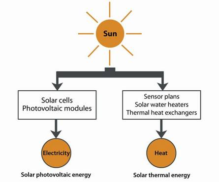
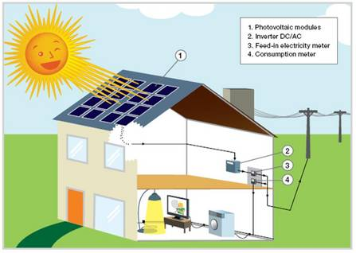
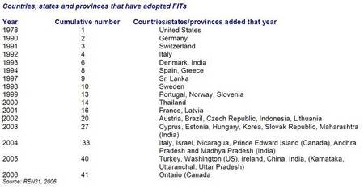
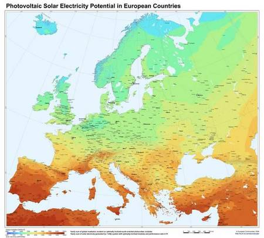
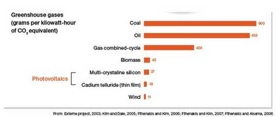
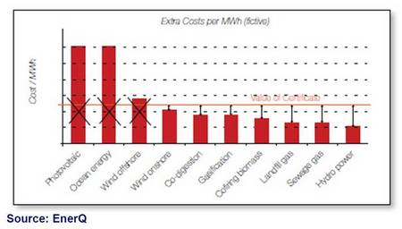

The word Photovoltaic (PV) is composed of two terms: Photo - Photon which means "light" and Voltaic from "Volt" which is the unit used to measure electric potential at a given point.
Photovoltaic systems use cells to convert sunlight into electricity. PV cells can be made from different so-called semiconductor materials. Today, silicon is the most widely used material, but other, usually compound (made from two or more elements) semiconductors is also used. They are silent and non-polluting, utilise a source of energy that renews itself, and require no special training.
The photovoltaic solar energy system converts sunlight directly into electric power to run lighting or electric appliances. A photovoltaic system requires only daylight (non direct sunlight) to generate electricity.
The solar thermal energy system generates and produces heat. This energy can be used to heat water or air in buildings or in many other applications.
Both use the irradiance of the sun even if the technology is quite different.

A photovoltaic (PV) system is a system which uses solar cells to convert light into electricity.
A PV system consists of multiple components, including cells, mechanical and electrical connections and mountings and means of regulating and/or modifying the electrical output. Due to the low voltage of an individual solar cell (typically ca. 0.5V), several cells are combined into photovoltaic modules, which are in turn connected together into an array.
PV systems can be used for homes, offices, public buildings or remote sites where grid connection is either unavailable or too expensive. PV systems can be mounted on roofs or on building facades or operate as a stand alone system. The innovative PV array technology and mounting systems means that PV can be retrofitted on existing roofs or easily incorporated as part of the building envelope at construction stage. Modern PV technology has advanced rapidly and PV is no longer restricted to square and flat panel arrays but can be curved, flexible and shaped to the building design.
"Grid connected" means that the system is connected to the electricity grid. Connection to the local electricity network allows any excess power produced to feed the electricity grid and to sell it to the utility. Such a PV system is designed to meet all or a portion of the daily energy needs. Typical on-grid applications are roof top systems on private houses.

The figure shows how electricity generated by solar cells in roof-mounted PV modules is transformed by an inverter into AC power suitable for export to the grid network. The householder/generator then has two choices: either to sell all the output to the local power utility (if a feed-in tariff is available) or to use the solar electricity to meet demand in the house itself, and then sell any surplus to the utility.
"Off-grid systems" have no connection to an electricity grid. Off-grid systems are contributing to rural electrification in many developing countries. PV is also used for many industrial applications where grid connection is not possible e.g. telecommunications, especially to link remote rural areas to the rest of the country.
Photovoltaic cells are equally used in many daily electrical appliances, including watches, calculators, toys, battery chargers, professional sun roofs for automobiles. Other applications include power for services such as water sprinklers, road signs, traffic signals, remote lighting and security phones.
Elements of a grid-connected PV system are: PV modules - converting sunlight into electric power, an inverter to convert direct current into alternating current, sub-construction consisting out of the mounting system, cabling and components used for electrical protection, and a meter to record the quantity of electric power fed into the grid.
Off-grid (stand-alone) systems use charge controllers instead of inverters and have a storage battery for supplying the electric energy when there is no sunlight e.g. during night hours.
When sunlight strikes a photovoltaic cell, direct current [DC] is generated. By putting an electric load across the cell, this current can be utilised. An inverter is an electrical device which converts direct current [DC] to alternating current [AC].
Solar cells produce direct current. Most of the electrical devices we commonly use however, expect a standard AC power supply. An inverter takes the DC from the solar cells and creates a useable form of AC.
An inverter is moreover necessary to connect a PV system to the grid.
Solar electric systems use PV technology to convert sunlight into electricity during daylight hours. In a grid-connected PV system, PV modules pass DC electricity through an inverter to convert it into AC power. If the PV system AC power is greater than the owner's needs, the inverter sends the surplus to the utility grid for use by others. It allows sending excess solar electricity back to the utility company.
If a home or office requires more electricity than can be provided by the PV system, the balance is provided through the grid connection. The utility provides AC power to the owner at night and during times when the owner's requirements exceed the capability of the PV system.
In many countries, the utility company purchases all PV electricity generated at a higher rate (feed-in-tariff) than the tariff applied for consumed electricity. In this case, a dedicated metering exists for "PV generation" and a second metering for "power taken from the grid", applying each different tariffs.
They put a legal obligation on utility companies to buy electricity from renewable energy producers at a premium rate, usually over a guaranteed period, making the installation of renewable energy systems a worthwhile and secure investment for the producer. The extra cost is shared among all energy users, thereby reducing it to a barely noticeable level.
FITs have been empirically proven to generate the fastest, lowest-cost deployment of renewable energy, and with this as a priority for climate protection and security of energy supply, not to mention job creation and competitiveness, FITs are the best vehicle for delivering these benefits.
The FIT system means that the pay-back time for PV is no longer several decades but several years instead. In countries such as Germany and Spain the demand for renewable energy systems has risen dramatically and the installation costs are coming down fast. This financing model has now been taken up widely around the world, as the table below shows.

FITs can be shaped according to a country's RE resources, its electricity distribution system and its RE targets. There are many design options to help take account of these variables, including some which make the system more compatible with liberalised energy markets (but carry higher investment risk). The important thing is that each technology is supported if viable.
Source: World Future Council
A PV system needs daylight to work but not direct sunlight. Indeed, if a PV module is exposed to an artificial light, it will also produce electricity.
The light of the sun consists both of direct light and indirect or diffuse light (which is the light that has been scattered by dust and water particles in the atmosphere). Photovoltaic cells not only use the direct component of the light, but also produce electricity when the sky is overcast. It is a common misconception that PV only operates in direct sunshine and is therefore not suitable for use in temperate climates. This is not correct: photovoltaic make use of diffuse solar radiation as well as direct sunlight.
When sunlight strikes a photovoltaic cell, direct current [DC] is generated. By putting an electric load across the cell, this current can be utilised. The amount of useful electricity generated by a PV module is proportional to the intensity of light energy, which falls onto the conversion area. The greater the available solar resource, the higher the electricity generation potential.
However, as the electrical output of a PV module is dependent on the intensity of the light to which it is exposed, it is certain that a PV module exposed to the sun at midday by clear sky, will produce maximum of its output electricity. You can thus indeed say that PV modules will tend to generate more electricity on bright days than when skies are overcast. Nevertheless, photovoltaic systems do not need to be in direct sunlight to work, so even on overcast days a PV module will be generating some electricity.
The electricity production of a PV system depends on external (environmental conditions) and internal (technology, layout of the system) parameters.
The efficiency of the PV module depends on:
Shadows on the modules (also if they appear only at certain times of day) reduce significantly the gain of the whole system and should be avoided.
The map below represents the yearly sum of global irradiation on a horizontal (inclined) surface. Alternatively the maps represent solar electricity [kWh] generated by a 1kWp system per year with horizontal (or inclined) modules.

To determine the PV electricity generation potential for a particular site, it is important to assess the average total solar energy received over the year.
Grid parity means that, for consumers, photovoltaic electricity will be cheaper than the retail electricity price.
In the light of decreasing solar electricity generation costs and increasing price for conventional electricity, solar power systems will equally become increasingly economic during the next few years. During the next 5-10 years, solar electricity will become cheaper (depending on location and peak hours) for private households than retail electricity.
A considerable advantage of solar electricity is that it is mainly produced around midday when conventional electricity is particularly expensive. Solar electricity largely replaces expensive peak-load electricity at preferential customer prices, which is why it would be wrong to compare it with cheap base-load electricity.
Grid parity (competitiveness with retail electricity prices) will be reached progressively from 2010 onwards in several European markets. Countries with the highest solar irradiation and higher electricity prices, such as Italy and Spain have the potential to reach grid parity starting in 2010 and 2012, respectively. Grid parity will be reached in Germany in 2015 and cover progressively most other EU countries up until 2020.
The degradation of the PV modules varies from the type of PV modules installed. The loss of power production within the lifetime of 20 to 25 years is estimated to 10 to 20% for crystalline PV modules.
The CO2 savings of a solar roof will depend on many factors, including:
If your electricity comes from a coal fired power station, each kWh you use will release around 1.000 g of equivalent carbon (various greenhouse gases converted into "equivalent carbon units" for comparison). However, if your original electricity comes from a hydro-electric power station, it is producing much less carbon equivalent emissions (less than 10g).
A very important factor is the design of the system. If a system is wrongly designed (e.g. modules facing the north and 90degree inclination) the electricity output will be very low and therefore the system will not replace much conventional electricity.
So clearly the amount of CO2 you will be saving is very dependent on the source of the energy replaced. Next to CO2 savings, each m² of solar module installed will produce clean and sustainable home-made electricity.

Definitely! In Germany for example, the average annual solar irradiance is 1000 kWh per square metre. With efficient solar power systems, this is sufficient to generate a considerable volume of electricity and heat from solar power.
Obviously Southern regions will reach grid parity and profitability more quickly.
Hence it is worthwhile producing solar energy in Europe, not least because this makes Europe less dependent on energy imports but also because:
The best way forward to ensure a secure energy supply for the future is an energy mix of renewable energy sources, intelligent load management in combination with energy storage. This will enable renewable energy sources to ensure a secure, climate-friendly and sustainable energy supply.
Solar power is particularly available during periods of peak load demand (midday and in summer) and is excellently complemented by wind power, whose peak values are principally reached in winter. Biomass, hydropower and geothermal energy are continually available and balance out any deficits.
The estimated lifetime of a PV module is 30 years. Furthermore, the modules' performance is very high providing over 80% of the initial power after 25 years which makes photovoltaic a very reliable technology in the long term.
Most manufacturers in general propose performance guarantees on the modules after 20 years of 80% of the initial output power. On the electronic components and accessories (inverters), the guarantee usually does not exceed 10 years.
But this doesn't mean that PV systems don't produce energy after 20/25 years. Most PV systems installed more than 25 years ago, still produce energy today!
If a PV module has a defect or no longer produces electricity or, under identical conditions, produces much less electricity than before, it is generally covered by the manufacturers' performance guarantee against a drop in efficiency of more than 20%.
Most manufacturers indeed propose performance guarantees on modules of 20 and 25 years for 80% of the initial output power. On the electronic components and accessories (inverters), the guarantee usually does not exceed 10 years although longer inverter insurances can be arranged.
In the light of decreasing solar electricity generation costs and increasing costs for conventional electricity (due to oil and gas prices), solar power systems will equally become increasingly economic during the next few years.
A considerable advantage of solar electricity is that it is mainly produced during the day when the demand is high and therefore electricity is particularly expensive. Another important characteristic is that PV is normally produced at the same site than demand; therefore, it is not necessary high investment on extending the electricity infrastructure.
In the long term, solar energy will be much cheaper than conventional energy. However, solar energy, like all energy production technologies (coal, gas, nuclear, etc.) in the past and present, need financial support from the government to further develop the technology and thus reduce prices to become competitive
However, solar energy is already well on the way: whereas the costs for conventionally generated energy have constantly increased in recent years and - faced with finite resources - will continue to increase by a considerable extent, increasing mass production has enabled the cost of solar energy to drop by an average of 10% per year.
The solar PV market has been booming over the last years and is forecasted to confirm this trend in the coming years. By the end of 2007 the global cumulative capacity exceeded 9 GWp. In the long term it is estimated that solar power could contribute to an increasing part of the total energy consumption. With appropriate policies both in developed and developing countries, EPIA and Greenpeace have devised in a joint scenario, that in 2030, photovoltaic could produce enough energy to supply electricity to 3,7 million people globally.
The Solar Generation report published by Greenpeace and the European Photovoltaic Industry Association (EPIA) in September 2008 concludes that solar electricity can contribute largely to the energy needs of two-thirds of the world?s population - including those in remote areas - by 2030.
The report confirms the impressive growth of the solar energy sector and demonstrates its potential of becoming a global energy contributor. By 2030, it estimates that over 1800 GW of photovoltaic systems will have been installed worldwide. This represents over 2600 TWh of electricity produced per year, or 14% of global electricity demand.
This is enough power to supply over 1.3 billion people in developed areas and over 3 billion people in remote rural areas who currently have no access to mains electricity.
In the long run no more support will be required to help the development of photovoltaic electricity.
The solar industry will become capable of a high level of growth without government subsidies in the foreseeable future. Given the increasing costs of conventional energy source, the decreasing costs of renewable energy sources, as well as a growing export market, solar thermal could achieve this within the next five years and PV sector in 10-15 years.
With increasing sales leading to scale economies and efforts realised by producers to reduce the cost of photovoltaic products, it is expected that photovoltaic will be competitive with electricity prices in the South of Europe by 2012 and in most of Europe by 2020.
Until then, the market introduction of solar energy is dependent on statutory frameworks if it is to become competitive and survive in the global market. Until then the industry requires investment security for developing solar power manufacturing plants and for their high development input, and, until then, consumers require legally secure incentives to invest in installing solar systems. The cost reduction can be achieved through research development and large-scale implementation with cost effective financing instruments, such as the advanced feed-in tariff.
Green Certificate also known as Renewable Energy Certificate (RECs) is a tradable commodity proving that certain amount of electricity (normally sold to the customer) is generated using renewable energy sources. Typically one certificate represents the generation of 1 MWh of electric power. Usually, following sources are considered as renewable: Wind, Solar, Wave, Tidal, Geothermal, Hydro and Biomass.
Green certificates represent the environmental value of renewable energy generated. The certificates can be traded separately from the energy produced. Several countries use green certificates as means to make the support of green electricity generation closer to market economy instead of more bureaucratic investment support and feed-in tariffs. Such national trading schemes are in use in e.g. Poland, Sweden, the UK, Italy, Belgium (Wallonia and Flanders), and some US states (Wikipedia).
Practically the producers, wholesalers, retailers or consumers (depending on who is obliged) are obliged to supply or consume a certain percentage from renewable electricity sources. For each unit of renewable electricity (e.g. MWh), a certificate is generated and issued to the producer. This certificate serves as proof that renewable electricity was delivered into the grid.
The figure below shows the costs per MWh versus the value of certificate. The figure illustrates that some technologies will be excluded from a Green Certificates market while already mature technologies are stimulated (only fictive values are used to show the impact).

Unlike the feed-in tariff, specific for each technology, a green certificate has no technology specific price. Instead of compensating specific generation costs of the technology, a number of technologies will generate windfall profits, meaning that the compensation is higher than their actual generation costs.
Technologies like PV are currently not competitive with other renewable technologies. However, their long term potential in cost reduction is immense and their potential of contribution to future production is larger than for other energy sources.
The big challenge for the renewable energy industry in general has been to make the cost of clean energy competitive with heavily-subsidised conventional energy. Householders or energy companies who wanted to install wind turbines or solar panels have been faced with lengthy pay-back times.
Without increased consumer demand and political measures to facilitate access to the market, manufacturers of solar photovoltaic (PV) panels, cannot produce the unit volumes needed to bring prices down and drive technological innovation.
The Feed-In Tariff (FIT) has proven to be the most effective policy instrument in overcoming these barriers. The feed-in tariff allows the pay-back time for PV to be only several years instead of decades (see also Q.7).
In 2008, the majority of installed PV systems benefit from well-designed grant support, in particular the feed-in tariff mechanism. This provides fair remuneration to the investor and rewards the effort made in investing in a clean energy source. Solar energy is becoming more economically viable and should become cost-competitive with conventional energy by 2015 in southern European countries and by 2020 across most of Europe.
Increasing customer?s demand, decreasing installation costs and increasing costs for conventional electricity, will render solar power systems become increasingly economic during the next few years. During the next 5-10 years, solar electricity will become cheaper (depending on location and peak hours) for private households than conventional electricity. Thus solar power will become independent of subsidies much earlier than might seem at first glance.
With stand-alone systems remote from the electricity grid, it is already worthwhile using solar technology today.
The renewable energy sources Directive at EU level reinforces the current legal framework and could facilitate the implementation of the feed-in tariff scheme throughout Europe.